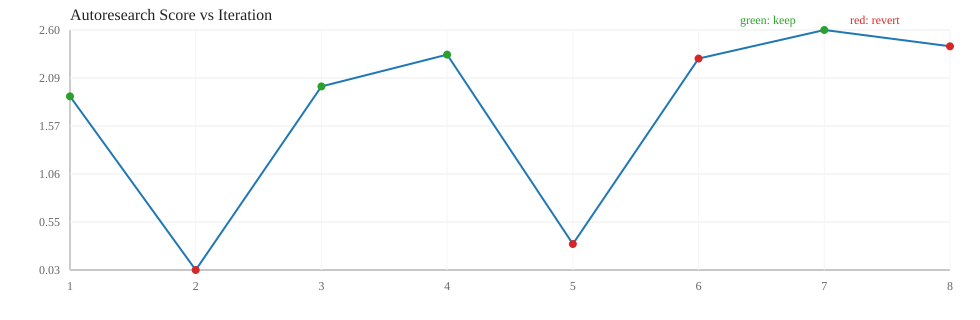

| ts | iter | bucket | proposal | decision | score | lat(ms) | gflops | reason | log messages |
|---|---|---|---|---|---|---|---|---|---|
| 2026-03-18T18:14:16 | 1 | medium | agent_heuristic | keep | 1.8920 | 0.6730 | 98.1774 | score_improved | iter=1 bucket=medium proposal=agent_heuristic candidate=blocked_pack|96|96|96|True|True|True|16|2 decision=keep score=1.891994 reason=score_improved note=heuristic_after_openai_fail |
| 2026-03-18T18:14:17 | 2 | medium | agent_heuristic | revert | 0.0335 | 90.1799 | 3.0134 | improvement_below_threshold | iter=2 bucket=medium proposal=agent_heuristic candidate=naive|0|0|0|False|False|False|1|1 decision=revert score=0.033508 reason=improvement_below_threshold note=heuristic_after_openai_fail |
| 2026-03-18T18:14:17 | 3 | medium | agent_heuristic | keep | 1.9984 | 0.6568 | 107.6118 | score_improved | iter=3 bucket=medium proposal=agent_heuristic candidate=blocked_pack|80|96|128|True|True|True|16|2 decision=keep score=1.998352 reason=score_improved note=heuristic_after_openai_fail |
| 2026-03-18T18:14:17 | 4 | medium | agent_heuristic | keep | 2.3387 | 0.5494 | 122.7379 | score_improved | iter=4 bucket=medium proposal=agent_heuristic candidate=blocked_pack|80|96|128|True|True|True|16|1 decision=keep score=2.338689 reason=score_improved note=heuristic_after_openai_fail |
| 2026-03-18T18:14:17 | 5 | medium | agent_heuristic | revert | 0.3118 | 5.0346 | 20.0455 | improvement_below_threshold | iter=5 bucket=medium proposal=agent_heuristic candidate=blocked|64|64|96|False|False|True|1|2 decision=revert score=0.311756 reason=improvement_below_threshold note=heuristic_after_openai_fail |
| 2026-03-18T18:14:17 | 6 | medium | agent_heuristic | revert | 2.2966 | 0.5753 | 124.6438 | improvement_below_threshold | iter=6 bucket=medium proposal=agent_heuristic candidate=blocked_pack|80|112|128|False|False|False|16|2 decision=revert score=2.296582 reason=improvement_below_threshold note=heuristic_after_openai_fail |
| 2026-03-18T18:14:17 | 7 | medium | agent_heuristic | keep | 2.6022 | 0.4932 | 136.3699 | score_improved | iter=7 bucket=medium proposal=agent_heuristic candidate=blocked_pack|64|64|160|True|True|True|16|1 decision=keep score=2.602163 reason=score_improved note=heuristic_after_openai_fail |
| 2026-03-18T18:14:17 | 8 | medium | agent_heuristic | revert | 2.4277 | 0.5397 | 130.4770 | improvement_below_threshold | iter=8 bucket=medium proposal=agent_heuristic candidate=blocked_pack|48|64|128|False|False|True|16|2 decision=revert score=2.427733 reason=improvement_below_threshold note=heuristic_after_openai_fail |